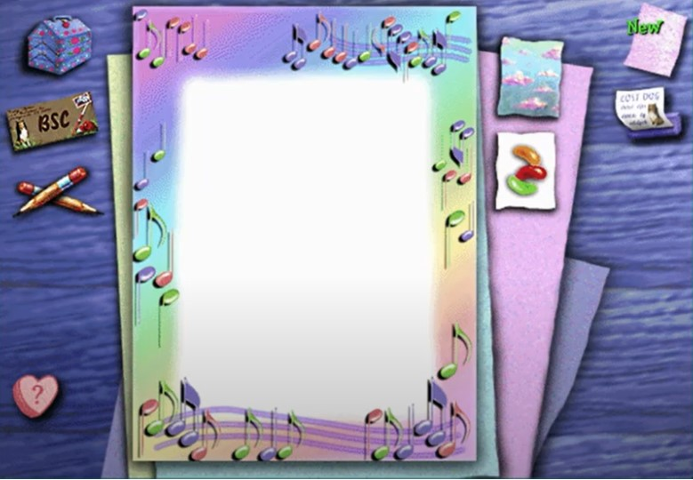
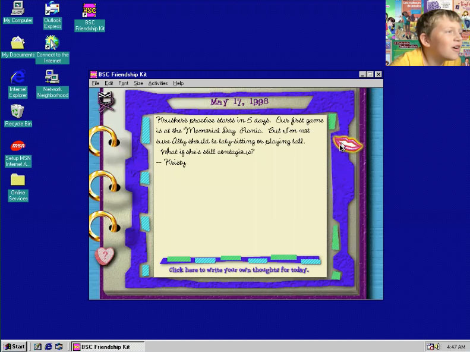

DSC #16: Anastasia’s Secret Language#
by Anastasia Salter and Quinn Dombrowski, with Sam and Paul Dombrowski
September 19, 2022
 https://doi.org/10.25740/pj698yt9545
https://doi.org/10.25740/pj698yt9545
Quinn#
Picture this: it’s March 1997, and at the back of the brand-new Baby-Sitters Club book #106: Claudia, Queen of the Seventh Grade, you come across this ad:

Maybe there’s a software store in your local mall. Maybe you send away for it by mail-order. But if you can talk your mom into paying $39.99 for the CD-ROM (that’s nearly $75 today, considering inflation), soon you’ll be holding this in your hands:

We’ve complained about how much work goes into building corpora for text analysis in DSC 2: Katia and the Phantom Corpus. (Who’s “we”? Check out Chapter 2 to learn more about the Data-Sitters Club!) But we’ve got it easy compared to people who do software studies. You can still meaningfully scan and OCR a beat-up old paperback book, but good luck running a scratched-up old CD-ROM at all… assuming you can even find a copy of it anywhere! Software like the Baby-Sitters Club Friendship Kit was an exciting new way for readers to engage with the Baby-Sitters Club franchise in the 90s, and one of the avenues for exposing girls to computing in a brief and beautiful window of time where girl-oriented software blossomed before everything was bought out by Mattel. Software scholars have been working on recovering and restoring major titles from before the Great Barbie Buy-Out of girl-oriented software, with indie, interactive literary works getting the most attention. The Baby-Sitters Club Friendship Kit doesn’t get any love either in retro gaming fan wikis that reconstruct software history one title at a time, or in media studies scholarship. But in our network of friends, we found one Guest Data-Sitter who was willing to go there with us.
Anastasia Salter was definitely not BSC material growing up in the 90s, as they spent much more time with books and video games and no time at all with children. They were the kid who knew how to debug a Soundblaster 16 audio problem while installing DOS adventure games, and that love of narrative games became the major focus of their research as a (sort-of) grown-up. Currently, they run University of Central Florida’s Texts & Technology PhD program, which is dedicated to research for people who want to understand everything at the intersection of books and computers.
Anastasia’s advocacy for more digital in the humanities can be found in blog posts on the now-old but still kinda awesome ProfHacker, where they focused on all the cool things that games can bring to our classroom and research.
Anastasia#
Rediscovering Girl Games#
The ’90s were an amazing time for PC games: because making a great game didn’t necessarily require the same large team it does today, and some of the genre patterns and expectations that shape games now were just being formed, lots of cool and strange things were released in that time. However, not many kids reading the BSC books would have seen a game like The Friendship Kit released without seeking it out: games were mostly sold then in dedicated computer stores. You can stroll back to those days with some amazing images from the Computer Store Visuals account - here’s a fantastic one capturing a store dedicated to kids software, Smart Kids Software, in Houston, Texas in 1992:

At the time, scholarship suggests that boys were more likely to get ahold of software from the store than others: a study of American kids and their gameplay in 1997 found that boys spent significantly more time playing, and the majority of titles featured boys as lead characters. However, a few designers and startups were working to change that: Brenda Laurel made several awesome games in the 90s through her company Purple Moon, which I remember reading about in Wired Magazine as promising to bring games focused on nonviolent, friendship-driven, introspective gameplay to the computer game stores. The most exciting part of what she was imagining was an expanding world of interconnected stories - not so different from what made BSC such a hit! You can read all about Brenda Laurel’s approach to bringing her research (and background in theater) to reimagining “games for girls” outside of stereotypes in Carly Kocurek’s awesome book on her work. Looking back, these games had a lot in common with visual novels today - Purple Moon games created a great sense of place and community.

Another amazing designer working on so-called “girl games” in the 90s was Theresa Duncan, and her at times surreal, beautiful storytelling - one of the rare examples of a game designer so well-loved that her work has been restored to be playable online, unlike the BSC game we’re trying to play today. The limited preservation work around edutainment generally, and girl-targeted works specifically, makes this type of emulation critical - there’s so much cultural history sitting on unplayable discs and drives, threatening to vanish.

Unfortunately things didn’t work out so well for these amazing game designers: the headline in Wired Magazine only a few years later, in 1999, read “Purple Moon Eclipsed.” Mattel was buying out, out-marketing, and ultimately out-selling all competitors, including Purple Moon, in their bid to make the pink-boxed Barbie games the dominant (and only) option on the girl-game shelf. Other companies with excellent edutainment marketed towards girls also disappeared around this time: Sierra On-Line, a company known for graphic adventure games focused on narrative, released an excellent science game - Quarky & Quaysoo’s Turbo Science (1992) - and a series of EcoQuest environmental adventures (1991 & 1993) as well as my personal favorite, Pepper’s Adventures in Time (1993), an alternate history game with some Monty Python-esque humor. That company was also acquired, and many of these games are, like BSC, mostly faded from all but a few online mentions.
Barbie games, on the other hand, remain with us: I still vividly remember being sent to a girl-targeted “Computer Mania Day,” a well-intentioned event trying to encourage diversity in computer science, and being confronted with Barbie Fashion Designer - about as pink as game boxes could get. There’s a grim reality to the mainstream software world’s gendered coding that really comes out when we look back at ’90s games, and that history can’t be separated from the larger divides in STEM and computer game industry production that continue today.

Barbie Fashion Designer (and similar pink box games) was another important step in affirming the market potential of computer games for girls, selling 500,000 copies and taking full advantage of both the Barbie brand and the cool maker-potential of printers. Brittany Vincent wrote about the game’s legacy and just how cool that hands-on component was for folks with a bit of Claudia in them: “The software itself came packaged with paper-backed fabric that would be loaded into an inkjet printer so that designs could be printed directly onto it. From there, the next step was to cut the clothing out and fold, assemble, tape, and stick together to fashion a top, a skirt, a dress, or whatever the order of the day was for your Barbie “fashion model” of choice.”
This might have played a part in Scholastic deciding to pick up a BSC game in the first place - Friendship Kit would come out a year after Barbie Fashion Designer, and would have some similar emphasis on creating a “practical” rather than story-oriented software on first impressions. However, it was also the last game of a small team, as I’ll get into when we take a closer look at it: like Purple Moon and Sierra, Sidewalk Studio wouldn’t make it into the ’00s. And unlike some of these more high-profile games, BSC Friendship Kit is not well documented outside of a few fan sites. There’s no easily playable version online, although the image is preserved (for now) in the Internet Archive: in order to really see into the BSC Friendship Kit box, we needed to get it to run ourselves and recreate the old Windows environment that it was designed for.
Quinn#
Running old software#
Software is really different from a book: you can pick up a book from the 19th century, the 18th century, or even earlier, and even though all sorts of things have changed about society, entertainment, education, and the place of books in all those contexts, you can still read the book. Not true for software: if it was created for mid-90’s Windows PCs, you basically have to trick it into believing it’s running on a mid-90’s Windows PC for it to work at all. Sometimes companies “port” games from an old platform to a newer one, which means that the software will run as if it belonged on the new software. (This happens a lot with popular old video games that get re-released for the latest gaming system.) But in most cases, you have to install and use an “emulator”, which recreates the environment that the software is expecting, from your modern computer.
The software for popular emulators can be pretty easy to use, because they’re designed for people at all technical skill levels. If you want to play old Super Nintendo games, RetroArch is available in the Android or iOS app store, or on Steam. The Internet Archive has made playback really easy for some of the old games it’s collected, by embedding DOSBox (an emulator for the old DOS environment) in their webpage for those games – as in, you can literally play the 1990 DOS port of the 1985 game Oregon Trail in your browser.
For other environments, though, it gets a little more complicated. One of the most common emulators is VirtualBox, which creates a base environment where you then have to find and install an old version of Windows. It’s doable, but you have to look around the internet for the old Windows installer files and license keys, or find an “image” (a pre-configured version of VirtualBox with a certain operating system and software installed) that has what you need.
A few years ago, with help from a Mellon Foundation grant, the Software Preservation Network developed EAASI: Emulation-as-a-service Infrastructure (pronounced “easy”). “Whatever-as-a-service” is all the rage in IT, maybe most prominently with software-as-a-service (e.g. why you now have to subscribe to things like Word and Photoshop instead of just buying them). Stanford University, where I work, is a Software Preservation Network partner organization, and while the system is still under development, there was no charge for me to use it. Since it’s not broadly available yet, I won’t go into detail with how you use it, but after a brief orientation from my colleague Michael Olson, it was as easy as the name implied. You can upload your own .iso files (a common file type when you make a copy of an old CD-ROM or DVD), like the one you can find on the Internet Archive for the Baby-Sitters Club Friendship Kit. And then you can launch your favorite older version of Windows in combination with your .iso file, just as if you were sticking a CD-ROM into an old computer’s disc tray. Once you’ve installed the software and run it, it just takes one click to save the state of the image (so you don’t lose your data from the game, like your name, birthday, and any journal entries you’ve written), and come back to it later.
Anastasia#
I’ll confess I never played Baby-Sitters Club Friendship Kit as a kid: even though I probably saw it advertised in the books and maybe even in a store, I didn’t tend to pick up games unless they promised a lot of story. Unlike Chop Suey or the Purple Moon Rockett games, the BSC Friendship Kit doesn’t put “play” front and center - instead, it almost feels more like kid-oriented productivity software when you first open it up. It actually reminds me of one of several 90s “edutainment” programs I adored, like Keroppi Day Hopper (still the most adorable digital planner out there) and the various “Print Shop” applications that used branded clip-art to encourage printing invitations. You can see the typical aesthetic of this era (Keroppi Day Planner was from 1994) - low res, and a hybrid of functional and playful:

So in that sense, BSC Friendship Kit isn’t trying to be a game. Its creative team, Sidewalk Studio, was a software group focused on “children’s interactive entertainment” (as described by Carolyn Handler Miller in her book on the history of digital storytelling). Its two leads, Gary Drucker and Rebecca Newman, were among the first figuring out what “edutainment” might look like. Originally their team developed games for the Phillips CD-i, a short-lived but fascinating format for early interactive multimedia. Pragmatically, that experience meant the team was used to working under constraints and incorporating limited interactivity to their other projects, like their particularly impressive “interactive storybook” version of The Berenstain Bears: On Their Own (1993). There are likely more records of their work and ideas out there in the world of game archives, but a lot of the writing around this type of children’s media is particularly hard to find. I did uncover one interview with Drucker reflecting back on their work via the Wayback Machine which has some great information on their most famous projects - Schitt’s Creek fans should particularly check out their ahead-of-its-time Wacky World of Miniature Golf with Eugene Levy (1993).
Unsurprisingly given both the death of the CD-i format and the entry of major competitors like Mattel into the “edutainment” marketplace, BSC Friendship Kit was one of the studio’s last projects and one of the few on CD-ROM, as Drucker discusses in the interview:
Our last two titles were CD-ROMs: “Babysitter’s Club Friendship Kit” (based on a well-known girl teen series of books) and a wonderful original title “Story About Me.” Unfortunately, neither was released by Philips because it closed down first. “Babysitter’s” was sold off to another distribution company whereas “Story About Me” just never got released although we finished it.
Drucker goes on to note that these projects were particularly designed to “utilize the more tool-like nature of the computer as opposed to the entertainment nature of the television,” and that really comes through in the utilities and creative aspects of Friendship Kit. It’s also evident in the marketing - the front of the CD promises users can “Organize - Plan - Communicate - Create - Play” - a clear hierarchy that is likely designed to appeal more to the parents buying software than the child audience.
On loading, you get the portraits of all the main cast - it’s interesting that timing-wise, even though there are several options as far as “live action” BSC members (from the HBO series, or from the movie), the game has a completely separate group of actresses attached: the video introductions are short and occur in the tiny portrait frames, likely to cut down on the overall size of the application - while this is a CD-ROM game, full motion video is still pretty intensive to run. Crossover casting of more experienced actors wouldn’t have been unusual for a more expensive production around this time - for true nostalgia and a sense of what that looked like, check out Mark Hamill in the Wing Commander series or enjoy this behind-the-scenes promo of Tim Curry performing voiceovers for Gabriel Knight: Sins of the Fathers.
This is definitely not that, but it is impressive in other ways: I think this is the largest and most diverse cast of young women I can remember seeing on a computer monitor in the 90s. The opening sequence is a recruitment to the BSC, which makes a lot of sense narratively - after all, the books were absolutely aspirational material for many young readers, and even I made the mistake of babysitting once after the books made it sound doable and fun. (Reader, it was not.)

The actresses each recorded several introductory statements as video clips, and the portrait screen is essentially a rotating feed of those one-liners including such gems as “You know what they say, you can take the girl out New York, but you can’t take New York out of the girl” - oh, Stacey.
As you are recruited and get set-up, there’s a “Personality Profile” you use to provide the software with a lot of basic information about yourself (best friend, things you like to do, etc) - this in turn feeds into the Mad-Libs style grammar of some of the Friendship Kit’s letters, so it can feel more like the BSC members are talking directly to you as you play. It’s a pretty cool use of simple variable storage for customization, and in line with similar moves towards personalization in software at the time (anyone remember Microsoft BOB? If not, picture your entire desktop feeling like Claudia’s bedroom, with graphical objects standing in for application icons. The 90s were a wild time for software!)
One striking aspect of the game’s opening is how it provides a great sense of space - the menu is right in BSC headquarters in Claudia’s room, with lots of specific details layered into the scene from Claudia’s fashion to the director’s chair. The setting feels almost like a hidden object game: it’s filled with references and cute art, and there’s also options to unlock including a “Secret Scrambler” for passing on encoded messages to other users of the program (the “encoded” messages need to be saved on a floppy disk for transfer).

But it’s also a weirdly empty space, as there aren’t any people: the phone will occasionally ring, in true BSC fashion, but no one else is ever present in the room. So here’s the weirdest part of the Friendship Kit: there is literally no baby-sitting involved. This is almost an interesting commentary on the entire series by the software designers: they decided that everything else about being “part of” the BSC, particularly in terms of socialization and creativity, was the real appeal of being part of the club. (Recalling my attempt at baby-sitting, I admit I agree with them.)
Outside of the occasional phone call, all your interactions with the BSC are one-sided, and once you start clicking on the objects in the room it becomes clear that most of the objects are productivity tools - the “friendship directory” is not that different from Keroppi Day Hopper and other software tools of the time, for instance:

The component that stands out to me is the BSC Journal, which hooks in nicely to the idea of the BSC club notebook as a way to share the baby-sitting experience. It’s also more of slow build work of electronic literature - it’s like if all the characters were on LiveJournal (which is some pretty impressive foreshadowing, since LiveJournal didn’t exist in 1996!), and you could follow their misadventures in vaguely connected entries that unfold over time.

So I confess I haven’t played with the software long enough to really appreciate the journal myself, in part because of the dynamic of daily updates that demands a long-term commitment - not surprising when you consider the cost of a CD-ROM at the time. To get a sense of the long play the designers were aiming for, I turned to the amazing nostalgic gaming reflection and documentary project by Amy A. Cowan, “Rereading My Childhood.” This is an example of one of my favorite things about looking at older games: seeing how other people relate to them. Amy’s project includes “A Year with the BSC Friendship Kit,” which is truly a journey - the internal logic of BSC Friendship Kit is date-based, so it uses the calendar to time the release of new journal entries spanning 53 weeks, communications from the BSC, and so forth. Certain events are premarked in time, like the birthdays of the BSC members, and those in turn play a role in the story moments conveyed.
Amy Cowan documents the journey of trying to decipher the handwriting fonts of the different club members as well as the various dramas of what amounts to an epistolary novel, a format choice that further complicates the fascinating design of this software: it has more in common with classic electronic literature and more recent digital works, like cell phone novels and twitterature. It’s also very BSC, recalling the “Super Special” series that alternates perspective between BSC members and friends across chapters, as well as the use of notebook entries in the regular BSC series, which use a similar technique of inserting handwriting as an indicator of authorship. Amy Cowan also observes some choices in who narrates and how events are introduced that is consistent with some of the patterns in the larger BSC that the DSC members have observed - one that stands out to me is the decision to have Claudia explain Kwanzaa to the reader. As Amy asks: “Why did they leave the cultural education to the least educated member of the BSC? Why couldn’t Jessi just tell me about Kwanzaa? Why did it have to be the only other POC in Stoneybrook?”

Most of the journal exchanges are pre-written, but there are some attempts at customization in the other exchanges that unfold over the long form play. Remember the Mad-Lib communication style? You can really see it at work in the letters Amy has collected over this extensive playthrough. This is really a reminder of how far grammar-based and generative text efforts have come since the 90s - nearly everything in this appears to have been pre-written, making the complete text likely a work to rival a short book installment in the series itself. The credited writer, Susan Amerikaner, is unsurprisingly experienced in adapting the style of franchises in her storytelling - she’s worked on everything from Disney Frozen readers to another ’90s classic, the Weird Al Show. This is pretty consistent with Ann M. Martin’s pattern across the series, as only a subset omit ghostwriter credits.
The journal is really the most world-building, character-driven section of the experience, however: a lot of the other components are very much of the print-shop-game world, like tools for making party invitations and flyers.
The “Stationery Kit” in particular has a strong similarity to the Barbie Fashion Designer, although there’s a lot less novelty to it. These designs definitely make me nostalgic for the Lisa Frank era - they are very gendered, and will make you long for 90s clip art. (You can take an even deeper dive into the aesthetics of the moment by following Mark Sample’s excellent Corel Gallery 1994 bot on Twitter, which is similarly powered by maximalism.)
Since the cover of the disc promised “Play,” I kept hunting around among these tools for something more game-like. I suspect the creators were feeling a bit limited by the expectations of a game for this age group: if you take a look at the edutainment offerings in their Berenstain Bears title, there’s lots of “learn to count” and basic literacy embedded, which is procedurally pretty easy to realize. In Friendship Kit, by contrast, the main standout is an interactive item called the “Map Game”: a game in which “you need to hurry all over town and remember where you need to go next,” according to the introductory video from Mary Anne, who promises “it’s terrific.” [Reader, it is not, but the graphic map is.] There’s a sense of an unrealized vision here - one wonders if originally the home was to build these spaces out for exploration, as the map has the feel of a 90s graphic adventure setting. It’s also a remarkably cool BSC artifact, though it would be interesting to go further and see how well it maps to the narrative geography of the novels themselves.

Play-wise, this turns out to be a hybrid of a memory game and an errands game - Mary Ann offers locations and highlights them, “Simon Says” style, and the player clicks all of them to complete the errands. In another game-esque widget, “The Puzzle Machine,” the player works through the “jigsaw” game: pieces move by in an assembly line, and the player is tasked with assembling an image of some item - usually something from within the room, often easily associated with a particular character, like this Kristy Thomas approved soccer ball.

Ultimately, I find myself wondering what Sidewalk Studios might have created if the company had continued - there are pieces of a narrative game present, but the productivity suite and design-focused toolkit is instead at the core. It’s also possible that the team thought the audience of BSC readers would be more interested in creating than playing, given the assumptions of who gamed at the time. Either way, it’s important to revisit this history and consider what it tells us about that imagined audience, and how this type of software shaped our collective introductions to personal computing. The internal “Communication Station,” with the option to send friends online postcards, is a reminder of the increased web use waiting just around the corner for the generation targeted by this software - LiveJournal itself, with its more public version of the internal “Journal” of the BSC, would launch just a few years later in 1999. And of course, the provider of my own first email account, Hotmail, launched around this same year (1996) - this increased availability outside of Internet Service Provider accounts (remember AOL?) would bring more of the BSC’s target audience into online communication.
Quinn#
90’s game nostalgia#
Like Anastasia, I never played the Baby-Sitters Club Friendship Kit, not least because my BSC phase was long over by 1996. (The introduction of Abby, which happened in 1995, was a shock that awaited me when I returned to the series as an adult!) I did play and enjoy the Purple Moon game series, but my very favorite game around that time was Star Trek: Klingon, which included a language instruction program for Klingon and an immersive video experience where you had to navigate through a scenario drawing upon your knowledge of Klingon culture. And when I had graphic design or other digital publishing needs, I would open up Microsoft Publisher, or if I was feeling whimsical, Creative Writer (a lesser-known Microsoft product for kids, whose Clippy-substitute was a purple guy named McZee.)
{kind=link}

So for me, the nostalgia of this dive into the BSC Friendship Kit came from the emulator’s Windows ‘95 startup sound, not the software itself. But a thought had crossed my mind: I had kids of roughly the right age to play this game, children of the 21st century who had grown up around computers and computer games, and who were familiar with the Baby-Sitters Club through the recent graphic novels (which we first looked at in DSC 5: The DSC and the Impossible TEI Quandaries). What would they make of this game?
Meet Sam and Paul#

Sam is almost 9, nearly as tall as me, and has brown hair and blue eyes along with a California tan like Dawn after a summer in Palo City. He loves the recent She-Ra remake, Magic: The Gathering, and playing computer games with his uncle Matt, who lives with us. He considers himself a serious gamer, and takes after me in a lot of ways. This wasn’t Sam’s first time getting enlisted as my collaborator; he’s been one of the youngest volunteers capturing Ukrainian cultural heritage websites as part of SUCHO. Paul, age 6, has a lighter complexion and hair, but the same blue eyes as me and Sam. He loves to read, and even though he’s only in first grade, he already reads just about everything his big brother does. He’s a big fan of cheese pizza, snakes and the History Oversimplified YouTube videos, and takes after his dad. Paul is not a big fan of being roped into whatever nonsense scheme his parent has come up with at any given moment.
“Do I have to?” he moaned, when I asked if he was ready to try the Baby-Sitters Club game when we got home from the library.
“Well, no, but…”

“I’m just going to read this book when we get home – see! I found it on the Lucky Day shelf!” Paul said, holding up the newly-released 12th graphic novel, Jessi’s Secret Language.
Kids play the BSC Friendship Kit#
And that’s how it began, with Sam sitting at my desk, and Paul reading in the bunk bed nearby, offering occasional color commentary.
“Hi, welcome to the Baby-Sitters Club! I’m Kristy Thomas, President. It was my great idea that started it all,” chirped the face in the center photo frame.
Sam nodded earnestly. “True.”
“But the BSC Friendship Kit is an idea all of us came up with. It’ll help you keep in touch with your friend – and that includes us, the members of the Baby-Sitters Club!”
I pointed Sam towards a little beaded bracelet in the corner of the screen, made of beads with the letters DEMO. The game spoke again: “Hi, welcome to the Baby-Sitter’s Club! After you sign in, you’ll be an official member of the Baby-Sitter’s Club, too. Then you’ll be able to participate in all sorts of activities that focus on friendship and communication. Start out in Claudia’s room…”
“Wait, who?!” Sam asked. “I thought her name was Carlita.”
“Nuh-uh, it’s Clenda,” Paul called down from the bunk bed.
And that was how I learned that my kids had both – separately, and in different ways – spent 12 graphic novels mangling Claudia’s name.
Signing into the game requires you to enter your first, middle, and last name, birth date, and street address, a task which posed some difficulty. “I don’t know how to spell ‘Berkeley’ or ‘California’…” admitted Sam – sounding just like me when I tell Associate Data-Sitter Mark Algee-Hewitt that I have absolutely no idea how to implement some method or statistical measure. Overcoming those hurdles with some help, he was ready for gameplay. “Let’s do this!” he exclaimed.

“Do you actually get to babysit?” asked Paul, over my shoulder.
“No,” I replied. “But there’s a lot of activities in Claudia’s room.”
“So you’re just stuck in the house?”
“I mean, there are things you can do…”
“But you’re just stuck in the house!”
This was, to be honest, a fair point: as children of the COVID era, I could see how a computer game where you’re stuck in the house might be inherently unappealing.
Sam went right for the jigsaw puzzle game, where Stacey popped up. “Here’s the BSC jigsaw game. I can tell you have a knack for putting things together.”
“I do!” replied Sam.
“… So I know you’re going to love this game.”
“I will!” he assured Stacey, before quickly racking up a score of -40 as one piece after another slipped off the edge of the conveyor belt. “Sorry, game… it’s actually really hard! No! Not another one!”
“Dude…” remarked Paul, peeking over the edge of the bunk bed.

Sam fled to Claudia’s room, and clicked on the wall map of Stoneybrook; the map game treated him better than the puzzle. “I like this,” he said as he was ‘running errands’ by clicking on locations in the right order. “Hey, I just do patterns! That’s the way!” I was struck by “the phone” being a location on the itinerary, but it didn’t seem to bother Sam – downtown Berkeley still has one working pay phone that he likes to mess with as we walk by.
Sam found his way to the calendar, where after a bit of clicking around, he started mashing the “back” button, watching the months scroll by. “Paul, I learned how to time travel!” he called to his brother. But like most time travel, it came with consequences: he clicked so much that the game started emitting glitchy noises until we escaped back to Claudia’s room.
Sam clicked on the stationery kit. “Do you know what stationery is?” I asked him.
“No…” he replied, but before he could say more, virtual Claudia – or, perhaps “Carlita” – interrupted.
“Hi, I’m glad you dropped in at the BSC stationery kit! It’s a good place to be creative and outrageous!”
Sam burst into delighted applause, before diving into the secret message scrambler to type “You suck” to his school nemesis, covering an entire ticket with star and cake clip-art, then making a tear-off message poster with some giant cat clip-art and the text “Play MTG”.
“Look, Paul, I made it say ‘Play MTG’! Now how do I color…?”
“You’re just hacking. Please stop hacking,” replied Paul, from the bunk bed.
“No!”

The virtual machine had a “print” option that pulled up a dialog box to nowhere, but I offered to take a screenshot so we wouldn’t lose it. Before we left the stationery kit, Sam went to save his creation. The game uses a different file extension for each type of creation – .tix for tickets, .pos for poster – but Sam wasn’t having it. “That’s a bad name,” he remarked, deleting the file extension and naming the file “POOP” with a small chuckle. I was waiting for his second filename, “POOOOOOOOOPOPOPOPOOPOPPPOOOOO” to be rejected by the virtual machine, but lucky for him, Windows 98 already allowed people to use filenames with more than eight characters.
Sam went in for another couple enthusiastic rounds of the map game and the puzzle game, which he aced this time, before I tried to steer him back to the Baby-Sitters Club content. We headed to the BSC Journal, where we were greeted by Mallory – everyone’s least-favorite fictional future children’s book author.

“I have so many ideas, I’d forget half of them if I didn’t write them down…”
“Who is THAT?” Sam blurted out.
“That’s Mallory,” I said.
“Ugh! I fainted! That just … SO UNREALISTIC!” Sam exclaimed.
The journal itself featured an entry by Kristy angsting about whether Abby should be babysitting or playing ball over Memorial Day because she might still be contagious. (How apt, as the plague continues here in the present!) It left me appreciating another trait of the game: the entries are read aloud by the characters, who will repeat it if you click the lip icon.
“Sam, can you read this?” I asked.
He stared hard at the screen. “Nooo,” he said.
“Do you remember what that kind of writing is called?” I asked.
“Cursive,” he muttered. “I’m going back to the puzzle machine.”
After a couple more perfect scores on the puzzle machine, Sam was ready to wrap this up. I asked him for his evaluation overall, and how he’d rank it relative to the Civilization games he enjoys playing, and XCOM, which he plays with his uncle.
“I think they are pretty close to each other. They are all very good. All three are tied.”
I looked at him with a raised eyebrow. “It’s okay! You really don’t have to say you liked it.”
“I kinda like it and I kinda don’t like it.”
“What don’t you like about it?”
“All the characters are… if you’re a graphic novel reader like me, all the characters look insanely different and you CANNOT TELL WHO THEY ARE. I MEAN IT.”
“Yeah, that is freaky,” Paul chimed in.
“Are there other problems with it?” I asked.
“You can time travel but it’s hard to get back, and it makes a very annoying buzzing sound. I think that would be the one other problem.”
“What was your favorite part about it?”

“The two games. Like, they’re very fun and easy for kids. So, yeah, like… they just need to be trained with the computer then it would be very fun.”
“Thank you for trying it out!”
“You’re welcome.”
Not a secret language#
The next morning, Paul pulled me aside. He was still thinking about the Jessi’s Secret Language graphic novel, in which Jessi learns American Sign Language to communicate with a new baby-sitting charge who’s deaf, ends up teaching more kids, and in the end surprises the deaf boy by bringing him to her ballet performance, and having someone interpret the narration using sign language. “You know, it wasn’t really a secret language because Jessi taught it to everybody. It’s just that it was a surprise.”
That’s Paul, for you: out of the blue, he has a way of coming up with something profound.
Software isn’t a secret language – not really, anyway. If we were able to more meaningfully access the code for the Friendship Kit, maybe there’s something closer to a secret language there, knowing how to read the functions and subroutines, but as we talked about in DSC 12: The DSC and the New Programming Language, coding isn’t magic. There’s a couple files on the CD-ROM image – Data and Data32 – written in a “secret language”, at least insofar as you can’t meaningfully read them in a text editor. But the more I thought about it, the more I thought Paul was on to something, and maybe ASL is a decent analogy for a certain kind of software compared to books. Software can be a way to tell a story, just like a book. Some forms of software – like works explicitly framed as electronic literature – may be easier to understand as being “like” books, similar to how ASL finger-spelling resembles English spelling-aloud. But narrative software can involve different media, structures, and modes of engagement that are unique, just as ASL has its own grammar, distinct from English, and employs facial expressions and body language in specific ways to convey meaning. Signed languages are often overlooked in discussions about “language”. Software is often forgotten in discussions about narratives. Both sign language and software are harder to capture in a medium that the most common, text-oriented tools are designed for, but they’re worth the effort.
There’s so much more the Data-Sitters Club can do with the Friendship Kit, if we can manage to extract (or transcribe) the letters and journal entries. We could use it as an example of stylometry – comparing the game text to books written by Susan Amerikaner as well as BSC books written by Ann M. Martin as a way to illustrate author signal. We could look at character voice: can we differentiate the game letter-writer Kristy from the book-narrator Kristy? We could look for repetition of phrases from the books, to see how much was borrowed directly from the source. But before we boil down this software into a set of text files that’s easier for us to work with, I’m grateful Anastasia took the time to explore it as software with us. Even if we treat it as text, it’s so much more than that.
Suggested citation#
Salter, Anastasia and Quinn Dombrowski. “DSC #16: Anastasia’s Secret Language.” The Data-Sitters Club. September 19, 2022. https://doi.org/10.25740/pj698yt9545.